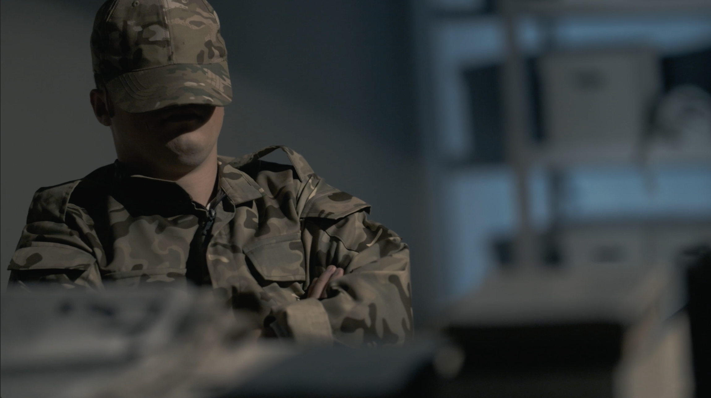
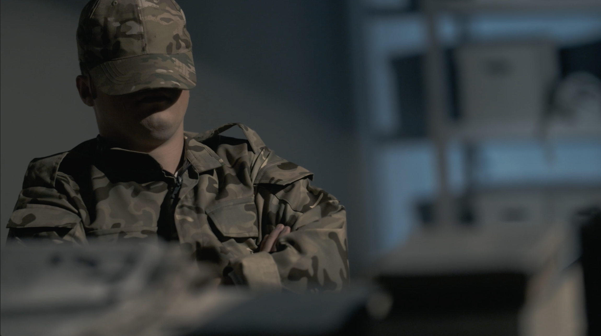
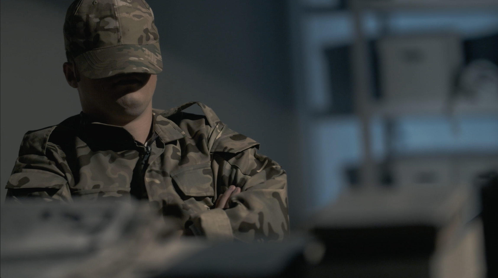

Description:
I worked as a preparer, researcher, and director on this film in Algeria and France.
The duration of the film is 52 minutes.
Ben M’hidi played a major role in preparing for the armed revolution,
and he sought to persuade everyone to participate in it. He said his famous saying,
“Throw the revolution into the street and the people will embrace it.” Also,
give us your tanks and planes and we will voluntarily give you our bags and bombs.
He became the first commander of the Fifth District of Oran. The martyr was among
those who worked hard to hold the historic Fasting Conference on August 20, 1956,
as he was the general secretary of the conference. He was then appointed a member of
the Coordination and Implementation Committee of the Algerian Revolution (the Supreme
Command of the Revolution). He led the Battle of Algiers at the beginning of the year 1956.
